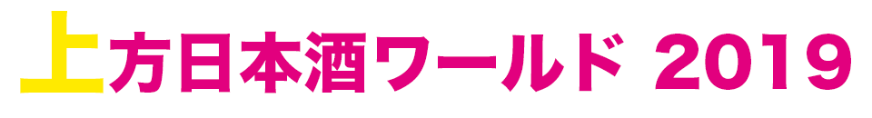

SCROLL

世界にはばたけ！
浪速から始まる日本酒新時代！
今年は２DAYS！
ますますパワーアップした上方日本酒ワールドをお楽しみに！！
入場チケットは2日間共通！
- 前売り券
- 参加店舗・委託店舗での購入…700円
イープラスでの購入…800円 - 当日券
- 当日AM9:30〜会場にて販売…1,000円
※表記は全て税込み
上方日本酒ワールドとは
美味しい日本酒だけでは、
ものたりない。
美味しい料理だけでは、
もったいない。
食事とともに楽しめる日本酒の素晴らしさを堪能できる「夢の日本酒屋台村」！
日本酒を愛しすぎた全世界の飲食店と、素敵な日本酒を醸す全世界の蔵元が、今年も大阪に集結します！
2010年に大阪天満宮で始まったこのイベントも、あまりの動員数に昨年は天満宮を飛び出し、湊町リバープレイスへ。
そして、今年は2daysの開催。
とどまることを知らない世界最大(？)の「日本酒と食のイベント」をどうぞお楽しみに！
更新履歴
- 2019年4月22日
- 参加店舗＆蔵元詳細ページに、当日のお料理と日本酒の銘柄を追加しました
- 2019年4月21日
- 英語ページを追加しました
- 2019年4月19日
- 日本酒コンシェルジュ、さかずきんとはのページを追加しました
- 2019年4月13日
- その他のブースページを追加しました
- 2019年4月10日
- チケット購入店舗を追加しました
- 2019年4月5日
- チケット購入店舗を追加しました
- 2019年3月31日
- 参加店舗 ＆ 蔵元一覧公開
- 2019年3月23日
- 問い合わせページ公開
- 2019年3月22日
- チケット購入店舗一覧公開
- 2019年3月21日
- プレミアムシートについてのページ公開
- 2019年3月20日
- チケット購入についてのページ公開
- 2019年1月30日
- 参加店舗発表
- 2018年12月31日
- 公式サイトオープン
参加店舗＆蔵元
{kind=link}
【5月4日】
- ＜北海道＞
とりきん ＆二世古（北海道） - ＜東京＞
青二才＆ ＋旭日（島根）
地酒や もっと ＆ 辨天娘(鳥取)
醸造科oryzae ＆ 神亀(埼玉)
にほん酒や ＆ Les Larmes「昇涙」（フランス）
燗酒屋 がらーじ ＆ 杜の蔵(福岡) - ＜愛知＞
米家 ＆ 長珍(愛知) - ＜大阪＞
味酒かむなび ＆ 日高見(宮城)
大阪まんぷく堂 ＆ 玉旭（富山）
蔵朱 ＆ 天穏(島根)
サケとスミビとロシュタン ＆ 十六代九郎右衛門(長野)
地酒屋いわ月 ＆ 仁井田本家(福島)
炭火焼とり えんや ＆ 扶桑鶴(島根) - ＜兵庫＞
日本料理 輪 ＆ るみ子の酒（三重） - ＜広島＞
そらや ＆ 玉櫻（島根） - ＜福岡＞
肉割烹 膾炙＆ 篠峯(奈良)
{kind=link}
【5月5日】
- ＜北海道＞
とりきん ＆二世古（北海道） - ＜東京＞
青二才＆ 花巴（奈良）
地酒や もっと ＆ 辨天娘(鳥取)
酒亭 穂椋 ＆ 日置桜(鳥取)
にほん酒や ＆ Les Larmes「昇涙」（フランス）
燗酒屋 がらーじ ＆ 杜の蔵(福岡)
和菓子 薫風 ＆ 仁井田本家(福島) - ＜静岡＞
お燗と中華 華音 ＆ 杉錦（静岡） - ＜滋賀＞
鶏と魚と酒 直 ＆ 浅茅生(滋賀) - ＜大阪＞
からほり きぬ川 ＆ 津島屋(岐阜)
かわ原 ＆ 鶴齢(新潟)
心斎橋 和っか ＆ 秋鹿(大阪)
日本酒餐昧 うつつよ ＆ 会津娘(福島)
日本酒とお食事 はちどり ＆ 遊穂(石川) - ＜広島＞
居酒屋 いぶしぎん ＆ 玉櫻（島根） - ＜福岡＞
食と酒 なかむた ＆ 旭菊(福岡)
上方日本酒ワールドの楽しみ方
- あらかじめ、参加店舗か委託店舗かe+にて、前売り券を買いましょう！
- 当日券も販売していますが、前売りのほうが結構お得(^^)
- 5月4日か5日か両方か、参加する日を決めましょう！
- どちらの日だけでもいいけれど、屋台の中身はガラリと変わるし、同じ料金で2日間楽しめるから、ぜひ2日間空けておいてね。
- 当日は前売り券を持って、会場受付へ！
- 混雑していると、ちょっとわかりにくいかも。会場の一番北側（道頓堀側）です✌
- 受付で、さかずきんのイラスト入り専用グラスと公式パンフレットをゲット！
- グラスが無いとお酒も料理も買えません(>_<)落としたり無くしたりしないようにね。
- 2日間参加するときは、2日目はグラスを忘れずに！
- グラスを持っていることが、参加のしるし。忘れたら当日券を買わないといけないよ。
- パンフレットを見ながら、ちょっと作戦会議。
- わからないことがあったら、気軽に日本酒コンシェルジュにご相談を。
- 順番を決めたら、さあ、お目当ての屋台へGO！
- この日のためだけに準備した渾身の料理とお酒を、心ゆくまで楽しんでね。
- 蔵元さんにも、ぜひ「美味しい」の一言を！
- 一息つきたくなったら・・・
- リバープレイス名物！大階段に座って空を見上げるのもよし
- 道頓堀のほとりで水面を眺めながら涼むのもよし
- 特設プレミアムシートでセレブな気分に浸るのもよし
- 生ビールで気分転換するのもよし
- さかずきんの限定グッズをゲットするのもよし
- 「御舟かもめ」に乗り込んで、お酒を片手に「水の都・大阪」を満喫するのもよし
思い思いの楽しみ方で、日本酒とともによい休日をお過ごしください！！！
アクセス
湊町リバープレイス
〒556-0017
大阪府大阪市浪速区湊町１丁目３−１